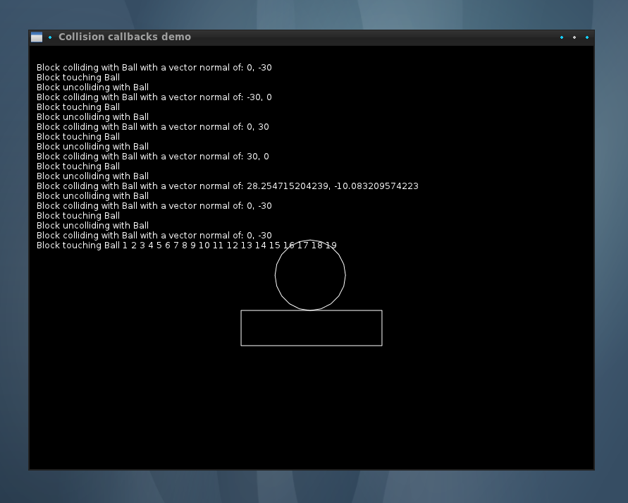

Tutorial:PhysicsCollisionCallbacks
Preface
If you do not have a good grasp on love.physics, you should first check out this physics tutorial.
In this tutorial we will create a collision between two objects that calls certain callbacks set by World:setCallbacks.

|
Making changes to a World is not allowed inside of the beginContact, endContact, preSolve, and postSolve callback functions, as BOX2D locks the world during these callbacks. |
Tutorial
main.lua setup
Let's start by setting up main.lua with 3 love functions: love.load, love.update, and love.draw
function love.load()
end
function love.update(dt)
end
function love.draw()
end
World setup
Now that we have a framework setup, let's setup a physics world in love.load with newWorld. We will also use World:update.
function love.load()
--Store the new world in a variable such as "world"
world = love.physics.newWorld(0, 200, true) --Gravity is being set to 0 in the x direction and 200 in the y direction.
end
function love.update(dt)
--Never forget to update your world every frame.
world:update(dt)
end
Now we want to create a ball and a ground. To do this we will need newBody, newCircleShape, and newRectangleShape. We'll connect the bodies to the shapes using newFixture.
function love.load()
... -- don't include this, it's just indicating where the existing code for the function should be
ball = {}
ball.b = love.physics.newBody(world, 400,200, "dynamic") -- set x,y position (400,200) and let it move and hit other objects ("dynamic")
ball.b:setMass(10) -- make it pretty light
ball.s = love.physics.newCircleShape(50) -- give it a radius of 50
ball.f = love.physics.newFixture(ball.b, ball.s) -- connect body to shape
ball.f:setRestitution(0.4) -- make it bouncy
ball.f:setUserData("Ball") -- give it a name, which we'll access later
static = {}
static.b = love.physics.newBody(world, 400,400, "static") -- "static" makes it not move
static.s = love.physics.newRectangleShape(200,50) -- set size to 200,50 (x,y)
static.f = love.physics.newFixture(static.b, static.s)
static.f:setUserData("Block")
end
The objects are there now, but you can't yet see them. Let's draw them.
function love.draw()
love.graphics.circle("line", ball.b:getX(),ball.b:getY(), ball.s:getRadius(), 20)
love.graphics.polygon("line", static.b:getWorldPoints(static.s:getPoints()))
end
Now we should see a ball fall down and hit a solid rectangle.
World Callbacks
But what if we want more information on the two objects colliding? Now we will use World:setCallbacks to further dissect their collision(s).
First thing we do is set the world callbacks with World:setCallbacks. There are four callbacks for a collision: beginContact, endContact, preSolve, and postSolve.
- beginContact gets called when two fixtures start overlapping (two objects collide).
- endContact gets called when two fixtures stop overlapping (two objects disconnect).
- preSolve is called just before a frame is resolved for a current collision
- postSolve is called just after a frame is resolved for a current collision.
function love.load()
... -- substitute for the rest of love.load
world = love.physics.newWorld(0, 200, true)
--These callback function names can be almost any you want:
world:setCallbacks(beginContact, endContact, preSolve, postSolve)
text = "" -- we'll use this to put info text on the screen later
persisting = 0 -- we'll use this to store the state of repeated callback calls
Now define each function you just named.
function beginContact(a, b, coll)
end
function endContact(a, b, coll)
end
function preSolve(a, b, coll)
end
function postSolve(a, b, coll, normalimpulse, tangentimpulse)
end
These functions are called every time one of the collision actions happen. They pass in two fixtures and a collision object. The postsolve callback also contains the normal and tangent impulse for each collision contact point. These parameters can also be named to whatever you want. In this tutorial, we choose a, b, and coll.
- a is the first fixture object in the collision.
- b is the second fixture object in the collision.
- coll is the contact object created.
- normalimpulse is the amount of impulse applied along the normal of the first point of collision. It only applies to the postsolve callback, and we can ignore it for now.
- tangentimpulse is the amount of impulse applied along the tangent of the first point of collision. It only applies to the postsolve callback, and we can ignore it for now.
Say we want to print to screen whenever a callback is called. We just need to modify the text variable we added to love.load() earlier by appending a string every time a collision action happens. We need a bit of extra code to keep the output clean too.
A list of functions you can use on contacts can be found at the Contact page.
function love.update(dt)
... -- substitute for the rest of love.update
if string.len(text) > 768 then -- cleanup when 'text' gets too long
text = ""
end
end
function love.draw()
... -- substitute for the rest of love.draw
love.graphics.print(text, 10, 10)
end
function beginContact(a, b, coll)
x,y = coll:getNormal()
text = text.."\n"..a:getUserData().." colliding with "..b:getUserData().." with a vector normal of: "..x..", "..y
end
function endContact(a, b, coll)
persisting = 0 -- reset since they're no longer touching
text = text.."\n"..a:getUserData().." uncolliding with "..b:getUserData()
end
function preSolve(a, b, coll)
if persisting == 0 then -- only say when they first start touching
text = text.."\n"..a:getUserData().." touching "..b:getUserData()
elseif persisting < 20 then -- then just start counting
text = text.." "..persisting
end
persisting = persisting + 1 -- keep track of how many updates they've been touching for
end
function postSolve(a, b, coll, normalimpulse, tangentimpulse)
-- we won't do anything with this function
end
And now you know how to use world callbacks!
To better explore how this world behaves and see when the callbacks are invoked, add some controls to allow you to push around the ball:
function love.update(dt)
world:update(dt)
if love.keyboard.isDown("right") then
ball.b:applyForce(1000, 0)
elseif love.keyboard.isDown("left") then
ball.b:applyForce(-1000, 0)
end
if love.keyboard.isDown("up") then
ball.b:applyForce(0, -5000)
elseif love.keyboard.isDown("down") then
ball.b:applyForce(0, 1000)
end
if string.len(text) > 768 then -- cleanup when 'text' gets too long
text = ""
end
end
Finished
Screenshots


main.lua
function love.load()
-- Create a physics World with gravity (0, 200) and enable sleep for objects at rest
World = love.physics.newWorld(0, 100, true)
-- Set the collision callbacks for the World
World:setCallbacks(beginContact, endContact, preSolve, postSolve)
Platform = {}
-- Create a Platform body for the Platform object at position (400, 400)
Platform.body = love.physics.newBody(World, 400, 400, "static")
-- Create a rectangle shape for the Platform object with width 200 and height 50
Platform.shape = love.physics.newRectangleShape(200, 50)
-- Create a fixture for the Platform object using its body and shape
Platform.fixture = love.physics.newFixture(Platform.body, Platform.shape)
-- Set the user data of the Platform fixture to "Block"
Platform.fixture:setUserData("Platform")
Ball = {}
-- Create a dynamic body for the Ball at position (400, 200)
Ball.body = love.physics.newBody(World, 400, 200, "dynamic")
-- Set the mass of the Ball body to 10
Ball.body:setMass(10)
-- Create a circle shape for the Ball with radius 50
Ball.shape = love.physics.newCircleShape(50)
-- Create a fixture for the Ball using its body and shape
Ball.fixture = love.physics.newFixture(Ball.body, Ball.shape)
-- Set the restitution (bounciness) of the Ball fixture to 0.4
Ball.fixture:setRestitution(0.4)
-- Set the user data of the Ball fixture to "Ball"
Ball.fixture:setUserData("Ball")
Text = "" -- we'll use this to put info Text on the screen later
Persisting = 0 -- we'll use this to store the state of repeated callback calls
love.window.setTitle ("Persisting: "..Persisting)
end
function love.update(dt)
-- Update the physics World with the specified time step (dt)
World:update(dt)
-- Apply forces to the Ball based on keyboard input
if love.keyboard.isDown("right") then
-- Apply a force of (1000, 0) to the Ball's body in the right direction
Ball.body:applyForce(1000, 0)
elseif love.keyboard.isDown("left") then
-- Apply a force of (-1000, 0) to the Ball's body in the left direction
Ball.body:applyForce(-1000, 0)
end
if love.keyboard.isDown("up") then
-- Apply a force of (0, -5000) to the Ball's body in the upward direction
Ball.body:applyForce(0, -5000)
elseif love.keyboard.isDown("down") then
-- Apply a force of (0, 1000) to the Ball's body in the downward direction
Ball.body:applyForce(0, 1000)
end
if string.len(Text) > 768 then-- Cleanup when 'Text' gets too long
Text = "" -- Reset the Text variable when it exceeds the specified length
end
end
function love.draw()
-- Draw the Ball as a circle using the Ball's position, radius, and line style
love.graphics.circle("line", Ball.body:getX(), Ball.body:getY(), Ball.shape:getRadius(), 20)
-- Draw the Platform object as a polygon using the points of its shape and line style
love.graphics.polygon("line", Platform.body:getWorldPoints(Platform.shape:getPoints()))
-- Draw the Text on the screen at position (10, 10)
love.graphics.print(Text, 10, 10)
end
-- define beginContact, endContact, preSolve, postSolve functions:
function beginContact(a, b, coll)
Persisting = 1
local x, y = coll:getNormal()
local textA = a:getUserData()
local textB = b:getUserData()
-- Get the normal vector of the collision and concatenate it with the collision information
Text = Text.."\n 1.)" .. textA.." colliding with "..textB.." with a vector normal of: ("..x..", "..y..")"
love.window.setTitle ("Persisting: "..Persisting)
end
function endContact(a, b, coll)
Persisting = 0
local textA = a:getUserData()
local textB = b:getUserData()
-- Update the Text to indicate that the objects are no longer colliding
Text = Text.."\n 3.)" .. textA.." uncolliding with "..textB
love.window.setTitle ("Persisting: "..Persisting)
end
function preSolve(a, b, coll)
if Persisting == 1 then
local textA = a:getUserData()
local textB = b:getUserData()
-- If this is the first update where the objects are touching, add a message to the Text
Text = Text.."\n 2.)" .. textA.." touching "..textB..": "..Persisting
elseif Persisting <= 10 then
-- If the objects have been touching for less than 20 updates, add a count to the Text
Text = Text.." "..Persisting
end
-- Update the Persisting counter to keep track of how many updates the objects have been touching
Persisting = Persisting + 1
love.window.setTitle ("Persisting: "..Persisting)
end
function postSolve(a, b, coll, normalimpulse, tangentimpulse)
-- This function is empty, no actions are performed after the collision resolution
-- It can be used to gather additional information or perform post-collision calculations if needed
end
See Also
Other languages
English
More info